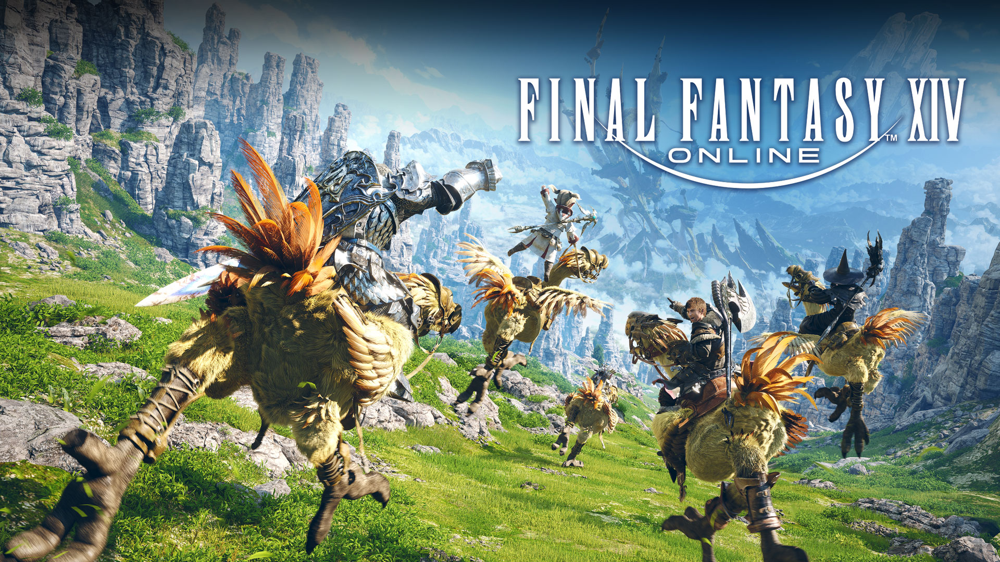
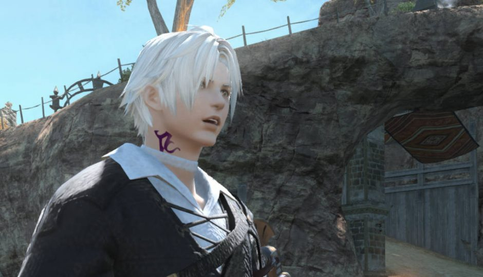
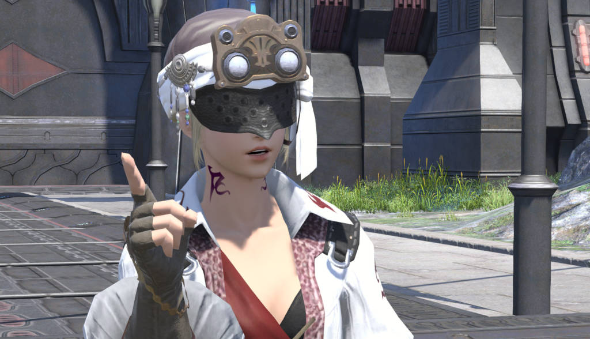

Final Fantasy XIV
Home
About
Contact
Services

Final Fantasy XIV 劇情角色介紹
雅·修特拉·路爾
雅·修特拉·路爾是隸屬於拂曉血盟的貓魅族賢人。 她精通以太學和魔法學，同時對古代語言和古老傳承造詣很深。

桑克瑞德·沃特斯
桑克瑞德是隸屬於拂曉血盟的人族賢人。精通野外生存技能，同時也是一位諜報工作的專家。
於裏昂熱·奧居雷
於裏昂熱·奧居雷是拂曉血盟的賢者，沙之家的主管。 身為一位專心研究預言詩的學者，他經常會說出一些雲裏霧裏的話以及做出令人迷茫的行為。

敏菲利亞·沃德
敏菲利亞·沃德，原十二跡調查會會長，十二跡調查會與救世詩盟合並後擔任了拂曉血盟盟主。 敏菲利亞後來響應海德林的召喚成為了光之巫女，行星的代言人。
帕帕力莫·托托力莫
帕帕力莫·托托力莫是拂曉血盟的賢人。以薩雷安魔法大學第二名的成績畢業的英才，隨後被賢人路易索瓦收為弟子。作為首席弟子長期不僅在學業上、也作為助手幫助師傅。

伊達·赫克斯特
伊達·赫克斯特不是純粹的薩雷安人，她出身於阿拉米格。20年前，加雷馬帝國侵占了阿拉米格，和妹妹莉瑟一起離開故鄉的她，雖然逃進了黑衣森林，但由於元靈的拒絕被驅逐出境。